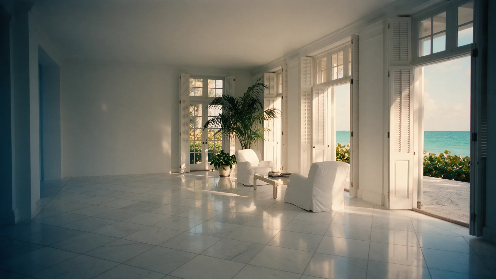
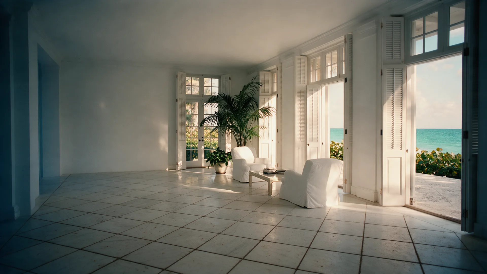

Tile, carpet and upholstery cleaning on Palm Beach
Careful, discreet cleaning for island homes, from the Estate Section to the North End, timed around the season.
- 240five-star Google reviews
- 15+years in Palm Beach County
- $1M+liability insurance
Who cleans tile, grout and carpet on Palm Beach?
Harbor Tile & Carpet Cleaning is a locally owned Palm Beach County company, based in West Palm Beach, that cleans tile and grout, carpet, area rugs, upholstery and mattresses in Palm Beach, removes pet stains and odors, and cleans yacht interiors.
Harbor has 240 five-star Google reviews, carries $1M+ in liability insurance and has served Palm Beach County for over 15 years. Call or text (561) 301-1977, Monday to Saturday, 8:00 AM to 6:00 PM.

Drag to compare. An illustration of a polished marble floor, common in Palm Beach island homes, before and after a deep tile and grout clean.
Cleaning services on Palm Beach
One local crew for the whole house, and the boat.
Tile & Grout Cleaning
Rotary cleaning that lifts the film off the tile and the grey out of every grout line, for kitchens, baths, entries and patios.
Carpet Cleaning
Deep extraction for wall-to-wall carpet, with a 7-step process that removes embedded soil and traffic lanes without leaving a sticky residue.
Area Rug Cleaning
Careful cleaning for area rugs, from everyday wool to the pieces you inherited.
Upholstery Cleaning
Fabric-safe cleaning for sofas, sectionals, dining chairs and mattresses.
Pet Stain & Odor Removal
Treatment for pet accidents and the odors that linger in carpet, rugs and upholstery.
Yacht Interior Cleaning
Discreet cleaning for salons, staterooms, carpet and upholstery aboard, including Harbor Shield protection.
Palm Beach homes, and what they need
Fine floors, fine fabrics and a seasonal calendar. Here is what we see most often on the island.
Marble, coral stone and antique tile
Island homes often have polished marble, porous coral keystone or original tile from the Mizner era. Each surface needs a clean that suits it, never one method for everything.
Heirloom rugs and fine upholstery
Hand-knotted wool and silk rugs, and linen and silk upholstery, need fabric-safe solutions and a careful hand. Delicate rugs can be cleaned at Harbor's facility.
A seasonal calendar
Many island homes sit closed over the summer. Book a clean before you return for the season, so the house is fresh when you arrive.
Salt air and sea breezes
Ocean air carries salt and fine sand indoors. Both settle into grout and pile and slowly dull light floors and fabrics.
How it works
Request your quote
Use the form below, or call or text (561) 301-1977. Tell us what needs cleaning.
Approve your estimate
You receive a personalized estimate to review and approve before anything is booked.
Get ready
We send a prep sheet when you book, and a reminder the day before your appointment.
The clean, then a check-in
The Harbor crew arrives, does the work and follows up afterwards to make sure you are happy.
Palm Beach questions, answered
Which parts of Palm Beach does Harbor serve?
The whole island, including the Estate Section, the North End, Midtown, the South End, the Worth Avenue area, Lake Trail, Sloan's Curve and Phipps Plaza.
Can Harbor clean my Palm Beach home before I return for the season?
Yes. Tell us when you plan to arrive and we will schedule the clean beforehand, so the house is fresh when you get back.
Is Harbor Tile & Carpet Cleaning insured?
Yes. Harbor carries $1M+ in liability insurance.
How do I get a quote for cleaning in Palm Beach?
Use the Get a Personalized Quote form on this page, or call or text (561) 301-1977 Monday to Saturday, 8:00 AM to 6:00 PM.
Can Harbor clean silk and antique rugs?
Yes. Harbor cleans wool, viscose, oriental and silk rugs. Delicate rugs can be cleaned at Harbor's facility rather than in the home.
Can Harbor remove pet stains and odors?
Yes. Pet stain and odor removal is offered for carpet, area rugs and upholstery.
What are Harbor's hours?
Monday to Saturday, 8:00 AM to 6:00 PM. Closed Sunday.
Get a Personalized Quote on Palm Beach
Tell us what needs cleaning and we will get back to you with a personalized estimate. Prefer to talk? Call or text (561) 301-1977.
Your request is ready.
Send it to Harbor by text or email. Nothing is sent until you choose.
Text it to Harbor Email it instead